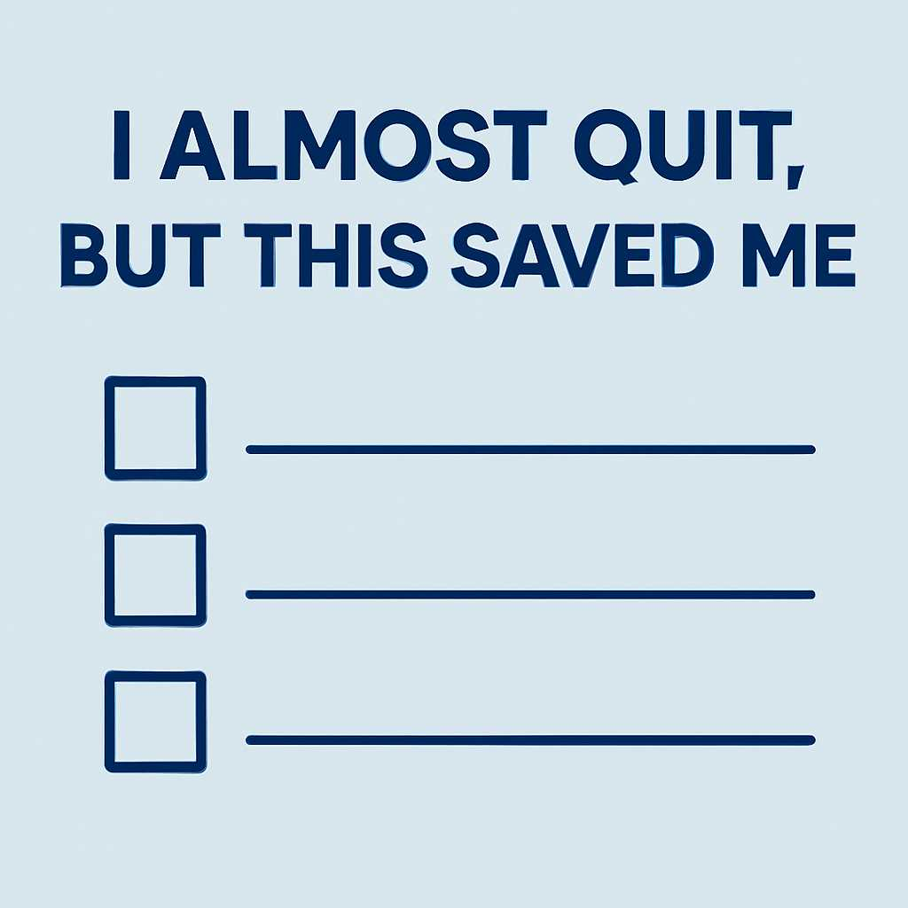

I Almost Quit — But This Saved Me
There was a time I stared at my trading screen and thought, "Maybe this isn’t for me." The losses were piling up, the stress was eating me alive, and the results just didn’t match the effort. I was done. Finished. I felt like a failure. I had told myself that trading was going to change my life, but all it seemed to be doing was draining it. I didn’t just want to quit. I wanted to forget I ever started.
The Breaking Point
I had just lost three trades in a row — back to back. Each one stung more than the last. I wasn't over-leveraging. I wasn’t gambling. I was following my plan, at least I thought I was. But the market didn’t care. It took my setups, spat them out, and punished me anyway.
I started questioning everything:
- Was I fooling myself?
- Was I even good enough?
- Was this dream just a fantasy?
I remember lying in bed that night, staring at the ceiling, wondering if I was chasing something that just wasn’t meant for me.
Then I Remembered Why I Started
Before the stress, before the losses, before the charts made me want to cry, I had a vision. It wasn’t just about money. It was about **freedom**. It was about building something on my own terms. I remembered watching YouTube videos of traders showing their setups, walking around with confidence and peace of mind. That inspired me. I wanted that peace. I wanted that power.
I remembered the first time I won a trade — how it felt. The rush. The pride. The belief that this wasn’t just a hustle; it could be a career. That memory hit different. It reminded me I had a purpose beyond my current pain.
The One Thing That Saved Me
I did something simple but powerful: I wrote everything down. I opened my trading journal and emptied my heart into it. The pain, the frustration, the doubts — all of it. And somewhere between the chaos of my thoughts, I wrote this:
“This pain is temporary. I’m learning. I’m growing. I will not quit.”
That one affirmation became my anchor. I started journaling daily again. Not just the technicals, but how I felt. What I feared. What I was grateful for. I also started meditating for five minutes before each trading session. Not to find some inner Zen master, but just to breathe. To calm my mind.
I started to trade with intention again. Less noise. More focus. I still lost some trades, but I began to feel in control again. My mindset shifted from victim to student.
Lessons I Took From the Fall
That breakdown wasn’t the end of my journey — it was the start of a new chapter. It showed me:
- Success isn’t linear. It’s messy. Emotional. Real.
- Discipline matters more than hype.
- Your mindset will make or break your strategy.
- Journaling isn’t a side thing — it’s the main thing.
Most importantly, I learned that **you only lose if you quit**. The ones who win aren't the smartest. They just outlast everyone else.
Final Words
If you're reading this and you feel like quitting, I get it. You're tired. You're doubting everything. You're wondering if it’s worth it. But trust me when I say this: **You're closer than you think.**
Progress feels like failure when you’re in the middle of it. But give it time. Keep learning. Keep adjusting. Keep showing up. And never forget why you started.
The strongest traders aren't the ones who avoid pain. They’re the ones who keep going through it.
Your future self is watching you right now, hoping you don’t give up.
Mr Right— Eugene,(GrindHub Creator)
← Back to Blogs